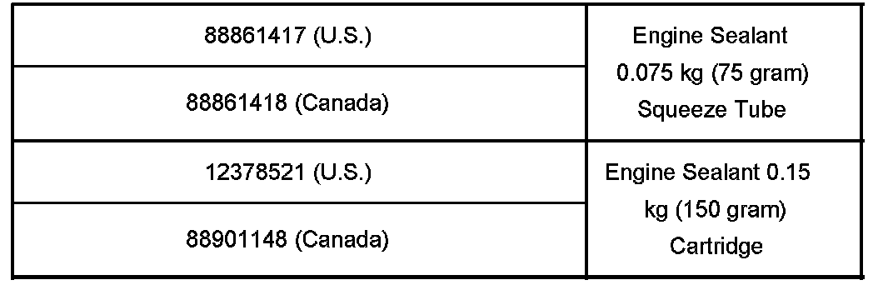
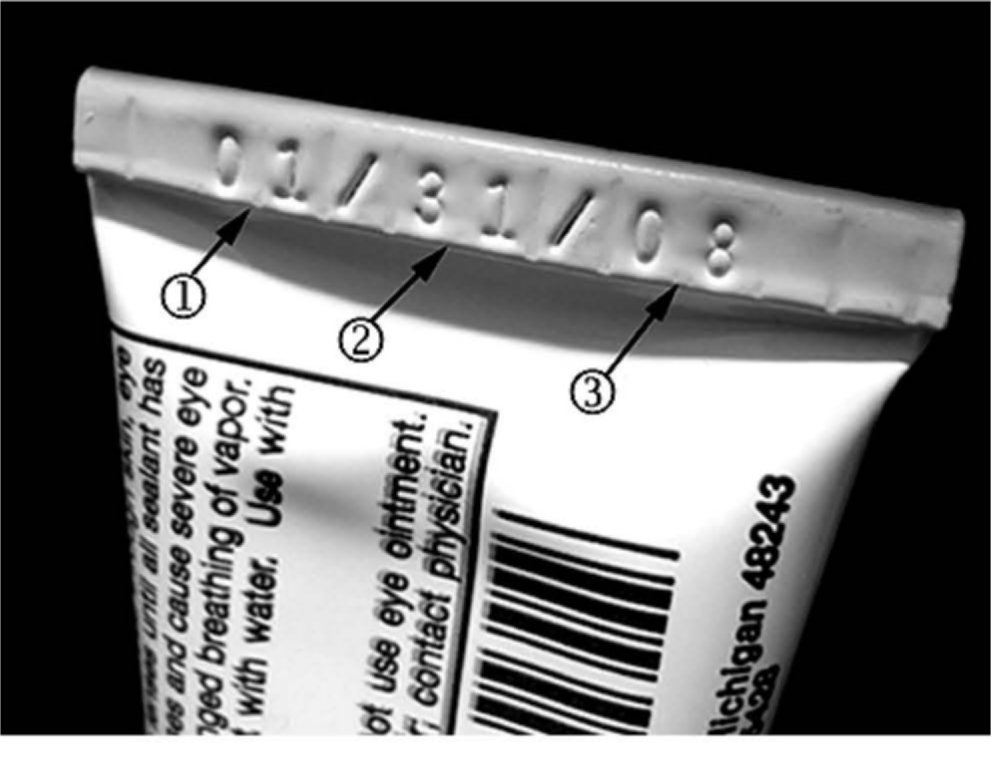
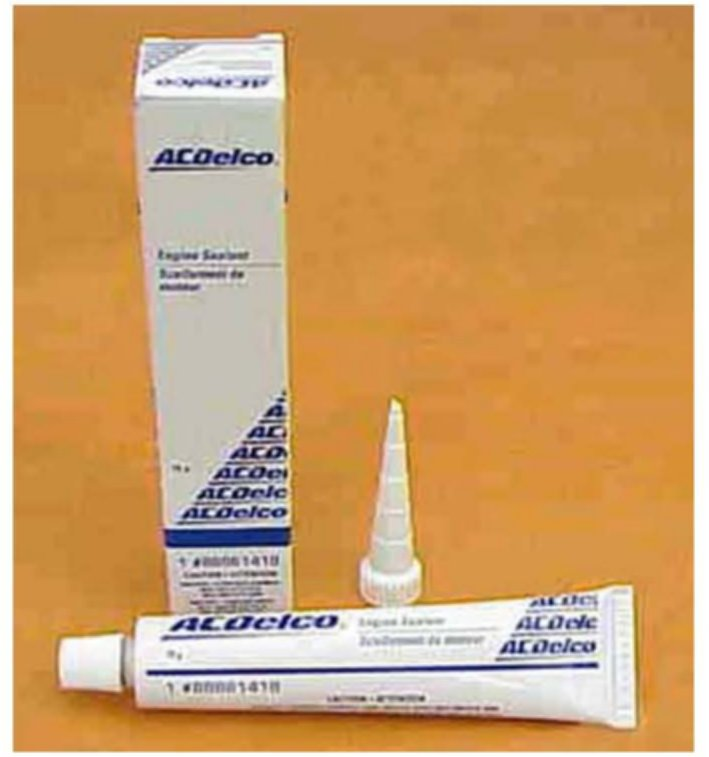
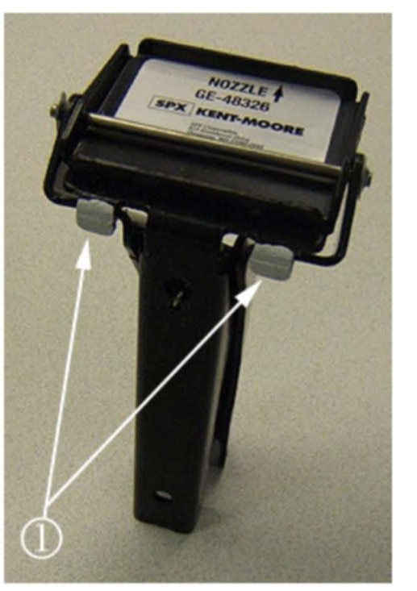
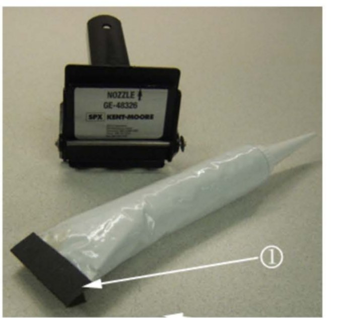
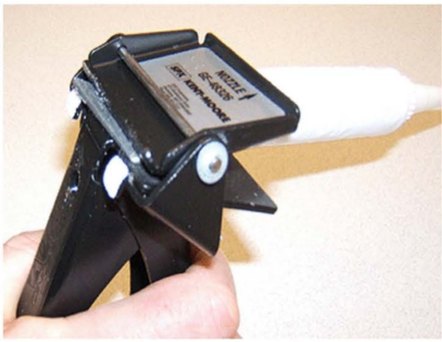

Engine - Sealant Usage/Procedures
Bulletin No.: 05-06-01-010BDate: September 28, 2007
INFORMATION
Subject:
Service Information Update on Consolidating Use of GM Liquid Gasket/Engine Sealants and New Sealant Dispenser GE-48326 Essential Tool
Models:
2008 and Prior GM Passenger Cars and Trucks (including Saturn)
2003-2008 HUMMER H2
2006-2008 HUMMER H3
2005-2008 Saab 9-7X
with Gasoline or Diesel Engines
Supercede:
This bulletin is being updated to add additional information about the use by date code printed on the crimp of the sealant tube. Please discard Corporate Bulletin Number 05-06-01-010A (Section 06 - Engine/Propulsion System).
In 2005 General Motors consolidated the use of all liquid gaskets/engine sealants. At that time, two sealants replaced all previous sealants referred to in Service Information (SI) and/or the Service Manual.
In 2007, GM has consolidated to one engine sealant already available in a 150 g cartridge and now in a 75 g aluminum tube. As a result, P/N 12346141, 54 g tube, has been deleted from service.
One of these, engine sealant P/N 12378521 (U.S.) and P/N 88901148 (Canada), was released in a cartridge to be used in a conventional caulking gun. The cartridge and conventional caulking gun proved to be too large and cumbersome in certain instances when used in on-vehicle service.
To address this concern, GM Powertrain Engineering released the engine sealant in a 0.075 kg (75 gram) squeeze tube (packaged six to the carton, with nozzles) along with a new essential service tool, Sealant Dispenser GE-48326, which has been shipped to all GM dealerships.
Sealant Guidelines
The GM Powertrain engineering specification for applying this sealant is an even bead, 3 mm (0.118 in) in diameter. Due to the high viscosity of the sealant, a dispenser is required to meet this specification. The GE-48326 Sealant Dispenser provides the ability to apply the sealant to specification using one hand, even in areas not accessible using the P/N 12378521 Engine Sealant cartridge and caulking gun.
This solitary engine sealant available in tubes and small cartridge is compatible with all synthetic, synthetic blends and mineral oils, as well as all engine coolants including DEX-COOL(R). The maximum working time of this sealant is 20 minutes. The sealant will be fully cured in 24 hours. The assembly may be filled with oil or coolant immediately after applying the sealant and tightening the bolts.

Engine Sealant Part Numbers

Use By Date Code
The 0.075 kg (75 gram) Squeeze Tube is not available for 2008 and prior Saturn models (only in 150 g cartridges).
The "use by" date on the 0.15 kg (150 gram) cartridge currently is not available.
The use by date of the 0.075 kg (75 gram) tube is twelve months from the manufacture date printed on the crimp month (1), date (2), year (3). GMSPO recommends that dealers use the first-in first out (FIFO) system of stock rotation on chemicals. Use the oldest stock first by rotating the oldest to the front of a stock location.
Special Service Tool GE-48326 Sealant Dispenser

New Engine Sealant 0.075 kg (75 gram) Squeeze Tube (also available in Vehicle Care label for US dealers)
New Sealant and Sealant Dispenser GE-48326
Engine Sealant 0.075 kg (75 gram) Squeeze Tube is not available for 2008 and prior Saturn models (only in 150 g cartridges).
The following service procedures will assist technicians in the proper use of the new sealant dispenser GE-48326 in applying an even bead of sealant 3 mm (0.118 in) in diameter using one hand, even in areas not accessible using engine sealant cartridge and caulking gun.

To use the sealant dispenser correctly, install the two white tabs on the rear handle (1) over the front handle. The white paint marks are for demonstration purposes only. Now your dispenser is ready to install engine sealant 0.075 kg (75 gram) squeeze tube.

Before installing engine sealant 0.075 kg (75 gram) squeeze tube into the dispenser, install a small piece of medium grit sandpaper, or equivalent, by folding it over the bottom of the squeeze tube (1). This will help hold the squeeze tube firmly in place while using the sealant dispenser.
Install engine sealant 0.075 kg (75 gram) squeeze tube with a small piece of medium grit sandpaper into the dispenser (see above graphic illustration). Remember to open the squeeze tube with a sharp knife or equivalent and cut the sealant nozzle to the correct diameter to apply a 3 mm (0.118 in) even bead of sealant.

The sealant dispenser with the engine sealant is now ready to be used (see above graphic illustration).

Disclaimer